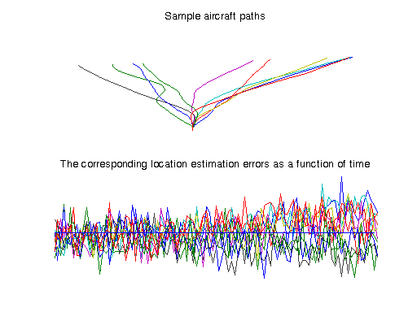
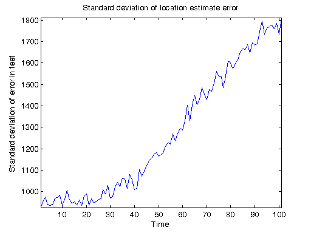

Distributed Radar Tracking Simulation
This demo uses the Parallel Computing Toolbox™ to perform a Monte Carlo simulation of a radar station that tracks the path of an aircraft. The radar station uses the radar equation to estimate the aircraft position. We introduce measurement errors as a random variable, and the radar station performs Kalman filtering to try to correct for them. To estimate the effectiveness of the Kalman filter, we perform repeated simulations, each time having the aircraft travel along a randomly chosen path.
For details about the computations, open the pctdemo_model_radar model.
Prerequisites:
Related demos:
Contents
Analyze the Sequential Problem
First, we look at how the computations in the sequential demo fit into the model introduced in the Dividing MATLAB Computations into Tasks demo. The main computations consist of a large number of simulations, and each simulation takes only a fraction of a second. We therefore have each task perform many simulations. Because the function pctdemo_task_radar can already perform many simulations in a single function call, we can use it directly as our task function.
Load the Demo Settings and the Data
The demo uses the default configuration when identifying the scheduler to use. The configurations documentation explains how to create new configurations and how to change the default configuration. See Customizing the Settings for the Demos in the Parallel Computing Toolbox for instructions on how to change the demo difficulty level or the number of tasks created.
[difficulty, sched, numTasks] = pctdemo_helper_getDefaults();
We define the number of simulations and the length of each simulation in pctdemo_setup_radar. The demo difficulty level controls the number of simulations we perform. The function pctdemo_setup_radar also shows examples of the different paths that the aircraft can take, as well as the error in the estimated aircraft location. You can view the code for pctdemo_setup_radar for full details.
[fig, numSims, finishTime] = pctdemo_setup_radar(difficulty); startClock = clock;
Divide the Work into Smaller Tasks
The computationally intensive part of this demo consists of a Monte Carlo simulation and we use the function pctdemo_helper_split_scalar to divide the numSims simulations among the numTasks tasks.
[taskSims, numTasks] = pctdemo_helper_split_scalar(numSims, numTasks); fprintf(['This demo will submit a job with %d task(s) ' ... 'to the scheduler.\n'], numTasks);
This demo will submit a job with 4 task(s) to the scheduler.
Create and Submit the Job
Let us create the simulation job and the tasks in the job. We let task i perform taskSims(i) simulations. Notice that the task function is the same function that you used in the sequential demo. You can view the code for pctdemo_task_radar for full details.
job = createJob(sched); for i = 1:numTasks createTask(job, @pctdemo_task_radar, 1, {taskSims(i), finishTime}); end
We can now submit the job and wait for it to finish.
submit(job);
waitForState(job, 'finished');
Retrieve the Results
Let us obtain the job results, verify that all the tasks finished successfully, and then destroy the job. We throw an error if we could not obtain any results, but display a warning if we got only some of the results.
jobResults = getAllOutputArguments(job); if isempty(jobResults) taskErrorMsgs = pctdemo_helper_getUniqueErrors(job); destroy(job); error('distcomp:demo:EmptyJobOutput', ... ['Could not obtain any job results. The following error(s) ' ... 'occurred \nduring task execution:\n\n%s'], ... taskErrorMsgs); end
Let us format the results and verify that all the tasks finished successfully. Notice how we concatenate all the arrays in jobResults along the columns, thus obtaining a matrix of the size (finishTime + 1)-by-numSims.
residual = cat(2, jobResults{:});
numOk = size(residual, 2); % The number of simulation results we obtained.
if ~(numOk == numSims)
taskErrorMsgs = pctdemo_helper_getUniqueErrors(job);
warning('distcomp:demo:IncompleteJobResults', ...
['Some tasks did not complete. Only obtained results for' ...
' %d out of %d \nsimulations. The following error(s) ' ...
'occurred during task execution:\n\n%s'], ...
numOk, numSims, taskErrorMsgs);
end
We have now finished all the verifications, so we can destroy the job.
destroy(job);
Measure the Elapsed Time
The time used for the distributed computations should be compared against the time it takes to perform the same set of calculations in the Sequential Radar Tracking Simulation demo. The elapsed time varies with the underlying hardware and network infrastructure.
elapsedTime = etime(clock, startClock);
fprintf('Elapsed time is %2.1f seconds\n', elapsedTime);
Elapsed time is 28.8 seconds
Plot the Results
We use the simulation results to calculate the standard deviation of the range estimation error as a function of time. You can view the code for pctdemo_plot_radar for full details.
pctdemo_plot_radar(fig, residual);